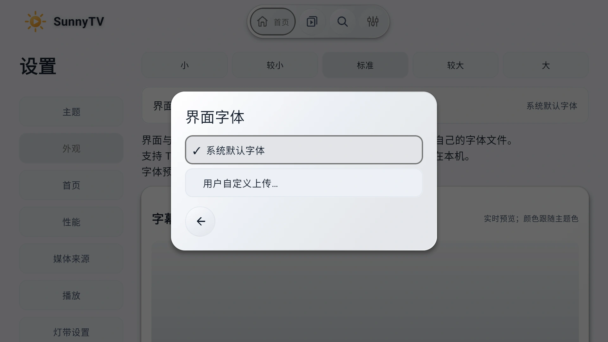
字，也可以是喜欢的样子。
界面与字幕可分别选字体，支持导入 TTF / OTF / TTC 文件。字幕大小、描边和位置也能单独调整，字体只保存在设备上。
为自己的媒体库，留一块好屏幕。
Android TV · 手机 · 平板 免费开源 / GPL-3.0
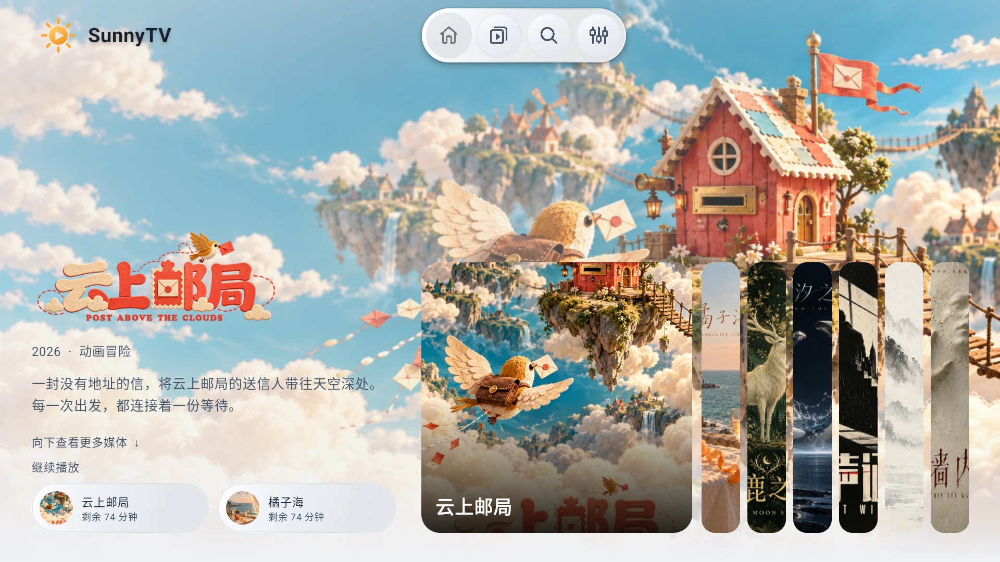
媒体浏览
海报、场景和片名标志来自自己的媒体服务。打开媒体库，熟悉的收藏一眼就能找到。
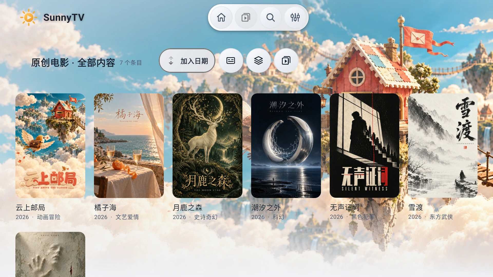
影片详情
简介、年份和播放入口放在一起。电视用遥控器选择，手机和平板直接触摸，接着上次的进度继续看。
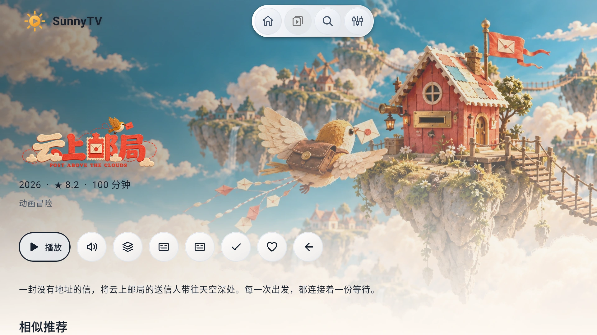
液态玻璃
图标落在同一片通透的弧面上。色彩柔和地折射，边缘留一点光，让画面自然流过导航栏。
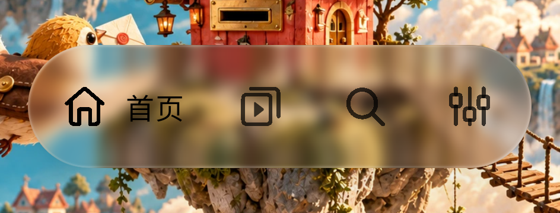
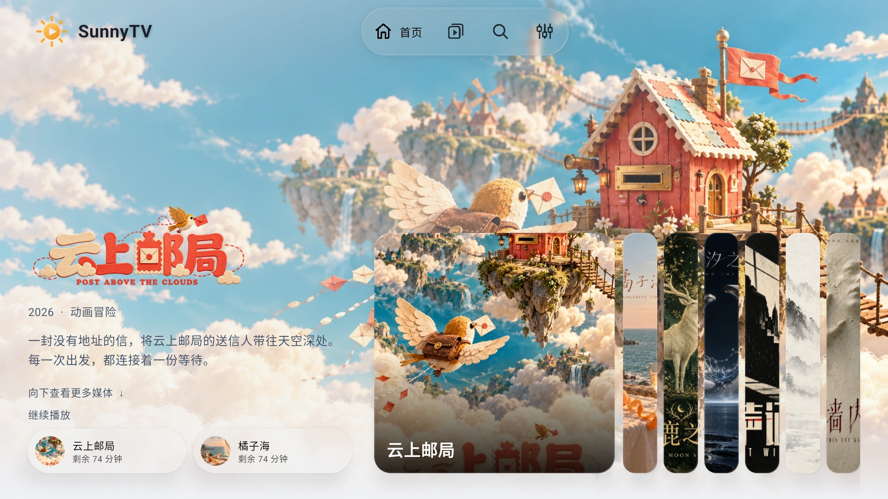
液态玻璃需要 Android 13（API 33）及以上、硬件加速，并开启「高开销主题」。低负载模式下不可用；不满足条件时回退「清晰默认」，浏览和播放仍可正常使用。
媒体来源
接入 Emby 或绿联影视中心，也保留 CloudDrive2 WebDAV 与 STRM 播放兼容。媒体仍由自己的服务管理。
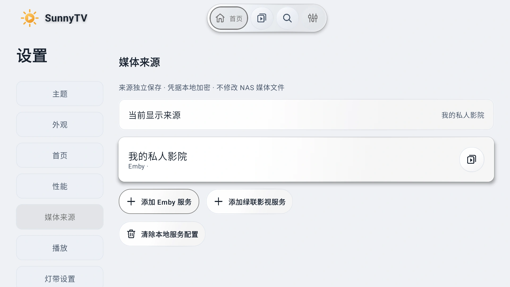
原生播放
原画直放，字幕与音轨按需选择。画面比例、播放速度和进度，在原生播放器里顺手调整。
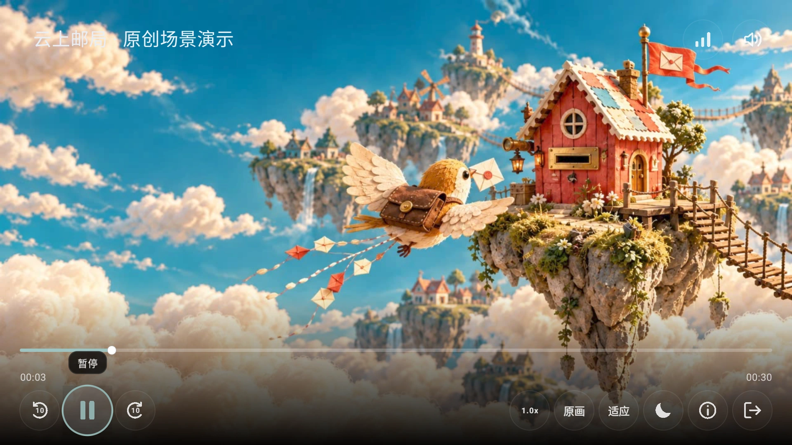
照顾你的习惯
SP658E 灯带
取视频四边的色彩，让观影角落多一点光。固定色、亮度和帧率也能按自己的房间调整。
在应用内连接灯带，设置末端与四角。离开 SunnyTV 后发送熄灯命令，覆盖升级保留已有校准。适用于 SP658E / V4023.21 / SPI RGB，功能默认关闭，需授予蓝牙权限。
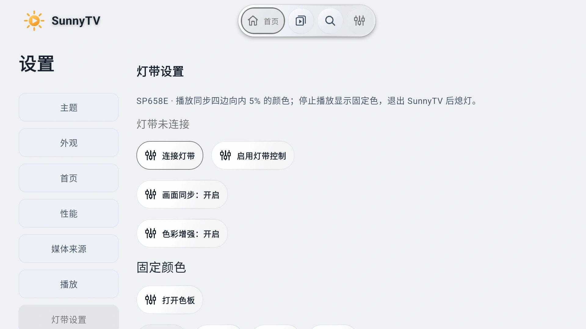
作者维护的自托管媒体整理项目。通过媒体发现、网盘转存、STRM 生成与 Emby 同步，把分散的资源整理成自己的媒体库。
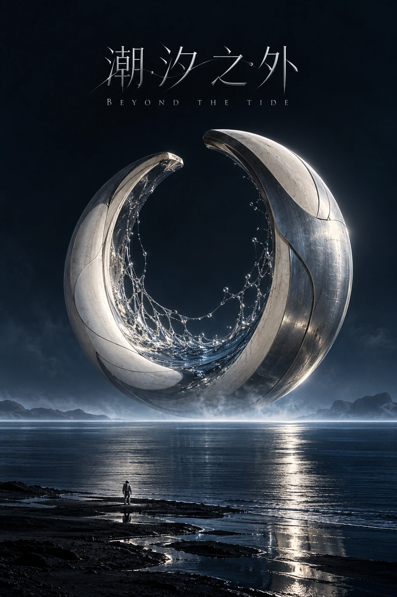
与 SunnyTV 配合，保留有效的 MediaIndex 播放入口，即可选择 115 已生成的云端清晰度，无需 NAS 重新编码。仅有最终 CDN 直链时，无法据此恢复云端档位。
原创演示媒体
完整海报、横版场景与独立片名标志，让每一部收藏都有自己的样子。
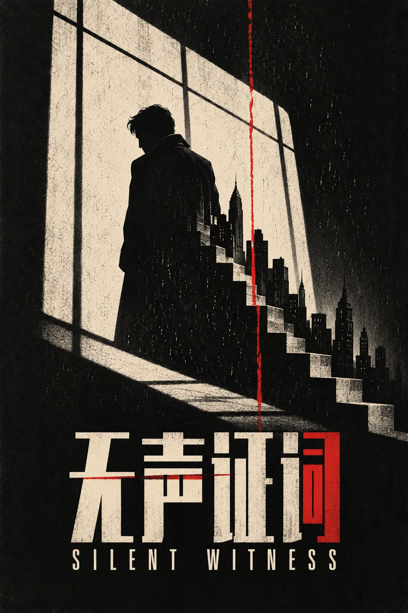
无声证词黑色犯罪橘子海文艺爱情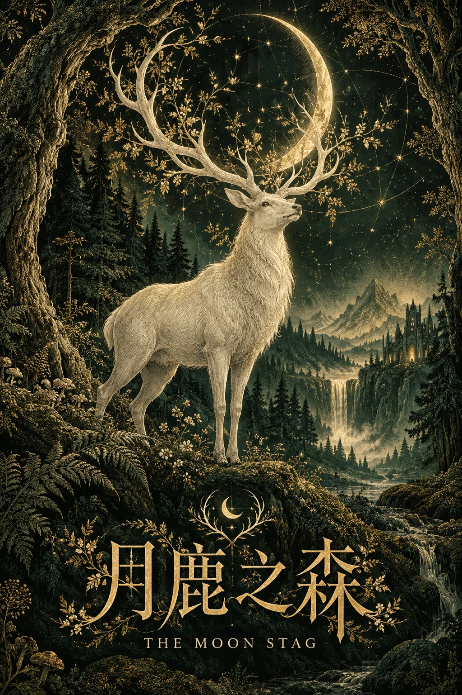
月鹿之森史诗奇幻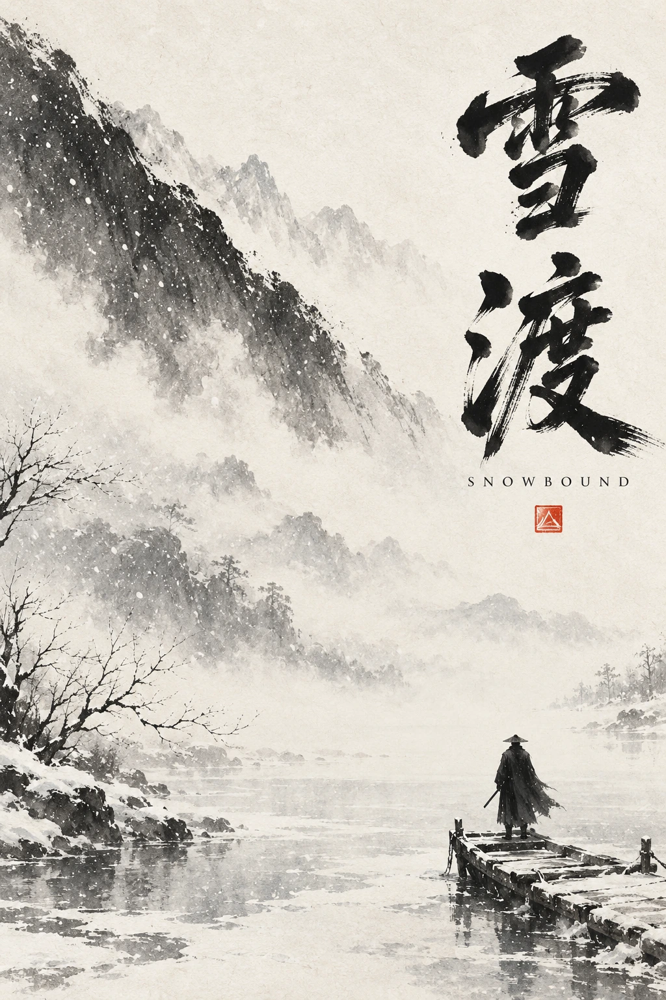
雪渡东方武侠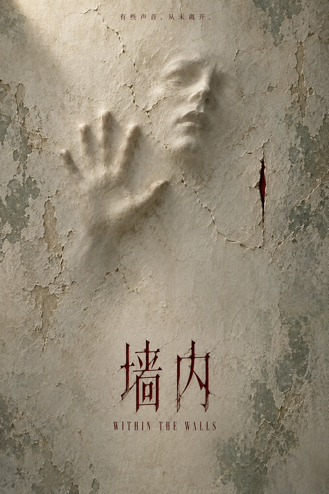
墙内心理惊悚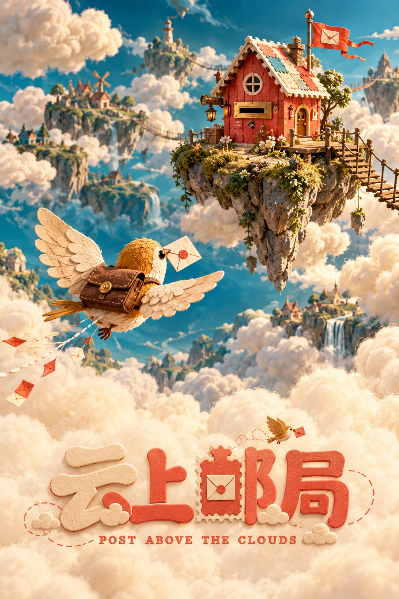
云上邮局动画冒险七部影片均为虚构演示内容。点击封面查看完整海报；SunnyTV 不提供影视资源。
SUNNYTV 1.0.0
安装 SunnyTV，连接自己的媒体服务。
下载前往 GitHub Latest · 1.0.0 / 构建 73
不内置影视内容。需要连接自己的媒体服务，并拥有相应访问权限。本站图片使用原创虚构影片资料。
本轮一体玻璃截图来自调整后的原生开发版本。官网正式下载仍为 1.0.0 /73，本次没有替换既有 APK；液态玻璃需要 Android 13 以上及硬件加速。
应用内优先使用 GitHub 更新，官网始终指向 最新正式版。问题可在 GitHub Issues 反馈。完整更新见 1.0.0 发行记录。